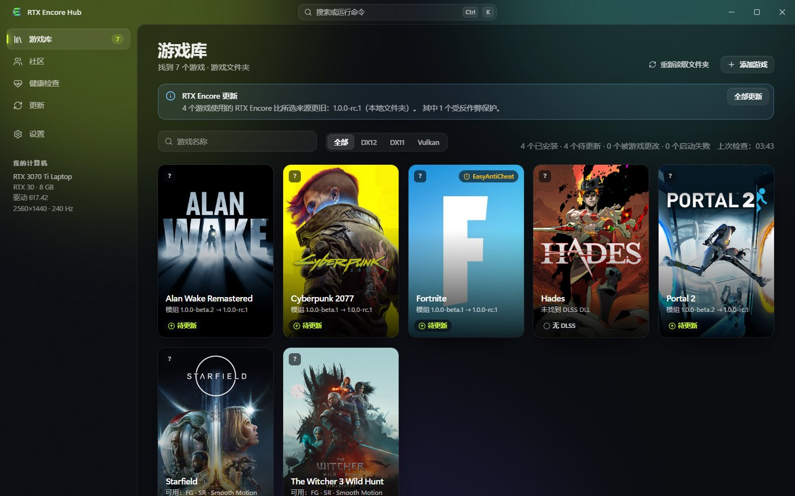
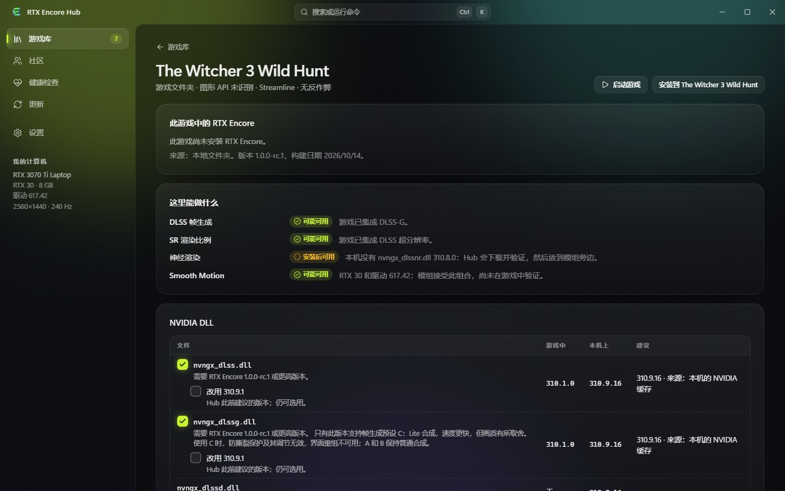
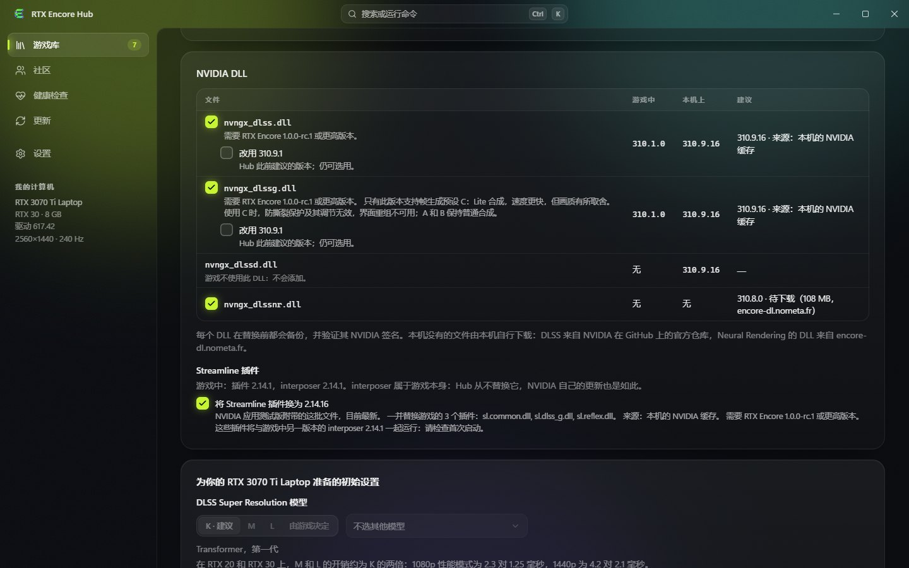

更多帧。
更多游戏。
RTX Encore。
DLSS、XeSS、最高 X6 帧生成与 Neural Rendering，也适用于没有原生 DLSS 的游戏。支持 DirectX 11、DirectX 12 和 Vulkan。通过 Hub 安装，选择引擎，在游戏中调整。
Intel XeSS / XeFG、Pre-SR、中央优先 NR 和 RTX 20 Smooth Motion 仍属实验性，兼容性取决于游戏、图形 API 及运行库。 报告问题.
Windows 10 和 11，x64 · 十二种语言 · 安装无需管理员权限
RTX Encore 2.0.0 与 Hub 2.0.0
兼容性取决于游戏、GPU、API 和运行库。没有原生 DLSS 时会估计运动，并将 HUD 与画面一起处理。维护者在 RTX 4090 上测试过 The Sims 4、Skyrim 和 Elden Ring，但这不代表所有游戏和 GPU 均已验证。X5/X6 和 Neural Rendering 仍为实验功能。
没有 DLSS 的游戏
模组 2.0.0 基于游戏显示的画面，在 DirectX 11、DirectX 12 和 Vulkan 中为没有 DLSS 的游戏带来 DLSS Super Resolution 或 DLAA、Intel XeSS、Neural Rendering 和帧生成。已在 RTX 4090 上于 PEAK、The Sims 4、Skyrim Special Edition 和 Football Life 2027 中测试。
在没有帧生成的地方生成帧
DLSS 帧生成 X2 至 X6（DirectX 11、DirectX 12 和 Vulkan），Intel XeFG 最高 X6（DirectX 12，可用时使用 NVIDIA Tensor Cores；Vulkan，支持 HDR10；以及 DirectX 11）。倍率可在游玩中更改；HUD 与画面一起插帧。
由 RTX Encore 估计运动
模组自己的运动估计在显卡上运行，并能自行找到游戏的深度缓冲。vort_Motion 的着色器方法和 NVIDIA Optical Flow 是另外的选择。
选择你的配置
首次为没有原生集成的游戏安装时，选择无、Smooth Motion、DLSS-G 或 XeFG，然后选择无、DLSS 或 XeSS。不会自动启用 Smooth Motion。Hub 会在安装前预览所需文件。
调整画质
原生 DLSS SR 和 XeSS 新增 Ultra（75%）渲染比例。自定义锐化可实时调节 0–100%。没有 DLSS 的游戏默认使用原生抗锯齿；要放大到屏幕分辨率，请以较低分辨率在窗口模式启动。
保持运行库兼容
缺少运行库时不提供对应引擎。旧版兼容运行库仍可使用，并显示更新提醒。Hub 帮助安装推荐文件；添加的 DLSS-G 使用指定的兼容文件组合。
RTX Encore 的 Discord 服务器现已开放
正在没有 DLSS 的游戏里试用 2.0.0？欢迎分享游戏名称、显卡和设置，与其他玩家交流测试结果，或就模组和 Hub 寻求帮助。
实测 GPU 处理开销，并非整体 FPS 提升。FG 为关闭与开启优化的独立基准对比，参考测试输出相同。SR 为游戏内测量，画面非常接近。NR Fast 以少量精度换取速度。这些历史测量对应 2.0.0 保留的优化，不是对发布二进制文件的新一轮测试。
Neural Rendering 前后对比
Neural Rendering 是 NVIDIA 的网络，作用于 DLSS 生成的画面：一到四个处理阶段，每个阶段一种风格，支持 HDR。RTX Encore 让它在 RTX 20、30 和 40 上运行，并针对 RTX 30 做了自己的优化。实验性功能，默认关闭。


The Blood of Dawnwalker，2560 × 1440，帧生成 X4，NR 310.9.16 以 1472 × 828 运行。角落的叠加信息显示了代价：关闭 NR 时 181 FPS，开启时 132 FPS。
NVIDIA 参考 → 使用 RTX Encore
同一功能优化前后对比。只有百分比的测量以 NVIDIA GPU 时间为 100，越低越好。GPU 与工作负载不同，收益不能相加。
RTX Encore Hub 负责安装
找文件夹、匹配 DLL 版本、保存备份：Hub 都会替您完成，并在动手之前先展示它要做什么。

选择你的配置
首次为没有原生集成的游戏安装时，选择无、Smooth Motion、DLSS-G 或 XeFG，然后选择无、DLSS 或 XeSS。不会自动启用 Smooth Motion。Hub 会在安装前预览所需文件。
平滑 X3 / X4：自动
配合模组 2.0.0，模组会为每个游戏学习是否应由 Streamline 安排 X3 和 X4 的节奏。Hub 会显示学到的结果；“重新测量”可从头开始。
你的语言，游戏内也一样
Hub 现在支持十二种语言（感谢 issue 12 的报告者），“模组菜单语言”可设置游戏内菜单的语言（现支持十一种）：默认与 Hub 相同，安装或更新时绝不覆盖在游戏中选择的语言。
用 Ctrl+F 查找游戏
在 Hub 1.6.0 的任何页面按
Ctrl+F都会选中标题栏的游戏搜索。还原游戏可同时清理
默认不勾选的选项还会删除模组的设置和日志，以及仅含 Hub 文件的私有运行库目录。感谢 issue 8 的报告者。
仅更新收藏游戏
Hub 1.5.3 可将批量更新限制为收藏游戏，同时保留资料库整体更新状态。
RTX 30/40/50 上的 XeSS 与 XeFG Tensor Core
独立、默认关闭的实验选项。Mod 1.5.3 准入 NVIDIA 621.01 和 621.12；游戏内验证仍仅覆盖较早 RTX 4090 / 621.01 配置。
Hub 的 V-Sync 与 RR 预设 F
Hub 1.5.3 提供 V-Sync 游戏 / 关闭 / 开启 和 RR 预设 F。V-Sync 需要兼容 DirectX 游戏，不适用于 XeSS-FG，且可能增加延迟。
合适的 NVIDIA 文件
模组支持的最新 DLSS、帧生成和 Streamline，只接受带有效 NVIDIA 签名的文件。
Neural Rendering 的 DLL
nvngx_dlssnr.dll 310.9.16，下载并验证。
每项设置都有说明
用表单编辑 rtx-encore.jsonc，对您的显卡无效的设置会变灰。
启动并验证
观察游戏的第一分钟并说明发生了什么，还可以准备一份用于报告的诊断。
社区配置
按游戏分享的设置，按您的机器排序。实验性，测试较少。
与其他模组和平共处
ReShade、OptiScaler 和 Special K 保留各自的文件名；Hub 会选择游戏真正加载的名称。
安装之前先看清楚
Hub 对一个游戏的说明是根据其文件、您的显卡和驱动推断出来的。这并不保证某项功能在该游戏中可用，也不测量任何性能。


快速开始
- 从发布页面下载
RTX-Encore-Hub-Setup-<version>.exe并运行：它只为您的账户安装。也可以下载无需安装的便携版.zip。 - 在游戏库中打开某个游戏的页面，查看这里能做什么，然后点击安装。
- 在健康检查中，启动并验证会检查第一分钟。RTX Encore 发布新版本时，点击全部更新。
支持本项目
RTX Encore 和 RTX Encore Hub 都是免费的，利用业余时间开发。无论是按月还是一次性的赞助，都能帮助它们保持免费并持续前进。
感谢我们的首批赞助者：mennogreg、Scarhead666，以及一位希望保持匿名的赞助者。